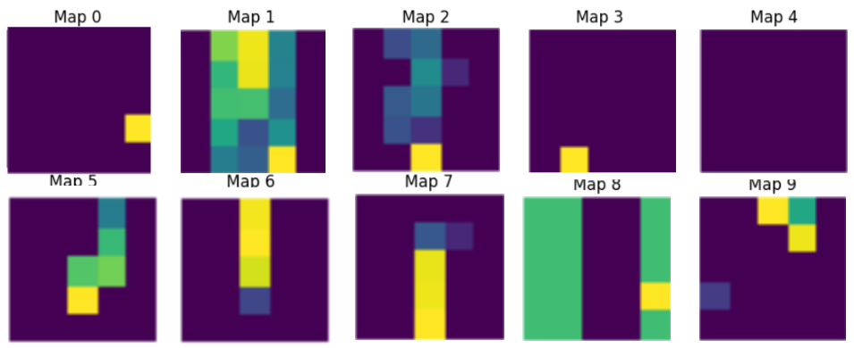

file_data
| file_name | assignment_4.pdf |
| author | ghostnation |
| course | ECE595 |
| date | 15MAY2025 |
1.0
Fundamentals of Recurrent Neural Networks
Recurrent Neural Networks (RNNs) are the foundation for the design of many sophisticated network architectures that ingest variable length inputs, such as Long Short-term Memory Network (LSTMs) and Transformers. Although RNNs are unique in their structure (at least insofar that they differ from CNNs and MLPs due to a unique configuration), RNNs are fundamentally processing input data, but performing an "exploit" based on the fact that time series data, being sequential and correlated. Thus, a network architecture has been developed and standardized over the years that represents a time-series aware system with memory persistence. RNNs are constructed in a way in which they are provided with a memory window within which data is accumulated and cumulatively integrated into the next available data inputs over a temporal period. This is generally referred to as the hidden state, which serves as a memory repository upon which the discrete time instances of states and observations are given perception of their previous experiences. This hidden state (\(h_t\)) is parametrized by a set of weights and biases that enables to to engage in a standard training procedure endemic to all neural networks: backpropogation.
Unrolled RNN Intuition

The unrolled visual representation of an RNN that passes a parametrizable hidden state between sequence iterations, designed in such a way that historical data contributes to the value of the hidden state. Parametrizations of the weight matrices are invariant between time steps, thus affording an architecture that does not implement \(O^n\) growth of parameters for increasing hisotorical perception.
1.1
Challenges with Traditional RNNs
Because RNNs pass the error signal down through the chain of time-series data, linked through a trainable hidden state weight matrix, a predicament emerges when the gradient response is magnified or dimished, and is referred to as an exploding or vanishining gradient in the ltierature. This prevents traditional RNNs with the classical three stage tunable matrix from having long-term memory utility, as it tends to overtrain (with scignificant oscillations along the eignvalues of the hidden state weight matrix), or undertrain (with no movement of the hidden state weight matrix that would result in adequate response to any error signal that would persist at earlier time steps). RNNs also have a fixed "temporal" window, or memory capacity, for which transient data can be acknowledged; expanding this window requires exponentially more computing power and memory storage. Finally, RNNs, due to the inherent reliance on sequential data are generally slow to train due to serialization of the trianing phase, instead of parallelization, in hardware. A mechanism by which to address these aforementioned issues is to compact both the input and output vectors, which eliminates the problem elicited by recurrence, but introduces new complications, because the system is no longer scalable, memory persistent, and comprised of ordinal data. This mechanism requires a new scheme that "attends" to data that is discovered to be salient, and affords such data with an "attention" metric, which assesses similarities between a query (prompt) and key (data samples), and builds a value that dictates the relevance of the latter to the former. Thus, perhaps ironically, the most effective method available to evaluated sequential data is indeed one that removes the nature of sequential inputs and instead directs the system to maintain anembedded memeory of salient events.
In the previous equations, the traditional MLP is recharacterized to represent the aforementioned tenets of image data, and we observe that the final equation (4) renders out a unique system that relies on far fewer trainable parameters than the previous model. This equation encapsulates the shifting window functionality endemic to CNNS, which is effective in reducing the parameter count of the training architecture as well as respecting the local topology present throughout the image, which affords correlated data that is salient to the effective learning of the CNN.
1.2
Data Representations in RNNs
In order to begin the discussion of how an RNN functions, and the fundamental theoretical alterations that enable RNNs to dominate serial prediction tasks, we must first begin with an exposition of sequential data. Sequential models originate from an initial directive to characterize a prediction based on past inputs, commonly referred to as autoregressive modeling; the objective is to define an expected value of a system given parameters: \(\mathbb{E}[x_t | x_{t-1}, \dots, x_1]\). The predicament with pure autoregressive datasets is that they do not accommodate variable length data, which is the case with most sequential, data driven scenrios, where some data has been recorded over long periods of time, and other data has only been tracked over a short time period. Typically, we are interested in some finite temporal window, which is the fundamental induction that allows these datasets to be "trainable" by a neural network, because it affords structure to each element in the window so that it can be parametrized by weights and biases. The implementation of memory, as mentioned previously, is accomplished with some tracking state, \(h_t\) that maintains a record of previous epxeriences.
As with any optimization paradigm, the structure of the loss function will dictate it's utility and allow for testing, validation, and deployment of the system once trained. RNNs are designed to ingest time-series data, and thus, when trained, is afforded observed values to reference at each time step within the temporal window. For classification data, the objective tends to minimize the negative log likelihood of predictions at each time step, as sequential data is afforded predictions at every logged event.
1.0
Joint Probability Decomp Objective (Autoregressive Prediction)
$$ P(x_1, \dots, x_T) = P(x_1) \prod_{t=2}^{T} P(x_t | x_{t-1}, \dots, x_1). $$
$$ P(x_1, \dots, x_T) = P(x_1) \prod_{t=2}^{T} P(x_t | x_{t-1}, \dots, x_1). $$
We will briefly mention that in order to structure sequential data in a way that is suitable for processing, the data must be tokenized, and perhaps grouped in contrived, secondary structures (such as n-grams) in order to perform statistical analysis. Due to the impetus driven by language models on RNNs, we typically refer to models that ingest time-series data as language models, even if data is not representative of a language system. Markov Models are the theoretical foundation of erecting the foundation of predictive mechanisms in sequential data, and the order of the model is a reference to how many steps ahead the system is capable of predicting a result, and conversely, how many dependencies an individual prediction relies on when generated. These concepts allude heavily to information theory heuristics, and the reader is suggested to refer to such work for more fundamental understanding of cross-entropy, surprisal, perplexity, and design terminology such as corpus, vocabulary, tokens, etc., zhang2023dive.
2.0
Analysis of LSTM networks for Prediction
In the following sections, we outline two LSTM architectures based on certain protocol criteria (for example, a defined kernel size, pooling layer, number of convolution layers, etc). The parameters of the network architecture are defined in Table 1. In the following section, we briefly discuss the deficiencies of RNNs that LSTMs attempt to mitigate.
2.1
LSTMs vs. RNNs
Despite the fact that both model architectures attempt to solve the same space of problems, LSTMs are designed in a way that is directed towards eliminating the problem of exploding/vanishing gradients. The conventional approach implemented on traditional RNNs, the gradients, when propogated through recurrent evaluations, are clipped via some bound associated with The Lipschitz Coefficient of the gradient.
2.0
Lipschitz association between Input Vector Distance
$$ |f(\mathbf{x}) - f(\mathbf{x} - \eta \mathbf{g})| \leq L \eta \|\mathbf{g}\|. $$
2.1 Gradient-Clipper Ball (receives projected gradients)
$$ \mathbf{g} \leftarrow \min\left(1, \frac{\theta}{\|\mathbf{g}\|}\right) \mathbf{g}. $$
$$ |f(\mathbf{x}) - f(\mathbf{x} - \eta \mathbf{g})| \leq L \eta \|\mathbf{g}\|. $$
2.1 Gradient-Clipper Ball (receives projected gradients)
$$ \mathbf{g} \leftarrow \min\left(1, \frac{\theta}{\|\mathbf{g}\|}\right) \mathbf{g}. $$
At best, the gradient clip via projection onto a ball is a useful hack that happens to be relatively ubuquitous in RNNs training schemes because it directly affects the learning rate down a change of recurrent events. Other methods to ensure numerical stability and computational feasibility include truncation (randomized or unrandomized) or asymptotic gradient modification to compensate for a vanishing or exploding gradient. Ultimately, the "recursive" resopnse chaing grows exponentially depending on the eigenvalues of the hidden state's weight matrix, which is problematic if any eigenvalues differ from 1. LSTMs introduce the concept of a memory cell, which is engineered to have gated connections and constant derivative edge weights. The gates affect how the hidden state is updated, and manage appropriate changes to maximize likelihood of output predictions across a time window for each event. These gate events are learned by the network, and thus the sctructure of their respective parametrizations is entirely self-managed during training. The visual representation of a memory cell is provided in the following figure. Essentially, a memory cell is comprised of 3 layers, an input gate, regulating the portion of input data that influences a hidden state update, a forget gate, regulating the amount of memory to cache or flush, and an ouput node, regulating the amount that memory of token values contributes to values at any arbitrary time step (assuming all previous data is recorded prior to the time step). Sigmoidal activations are implemented in each of the gates in order to bind \(\textbf{I}_T\) (input gate), \(\textbf{F}_T\) (forget gate), \(\textbf{O}_T\) (output gate) \(\in (0,1] \). An input node is placed as a mechanism by which to reconfigure the forget and input gates prior to passing data to the output gate, so as to allow for incremental increases or decreases in the magnitude of weighted input vectors to the output gate. Because it is activate by a tanh function, certain magnitudes of weights and biases can be associated with either decreases in output magnitudes (indicating classification "detours") or increases in output magnitudes (indicating increased classification confidence). With such precisely dedicated mechanisms, LSTMs are highly effective at time-series prediction while also having recalcitrance to the previously mentioned complications of RNNs. Despite the fact that Transformer networks ahve largely superseded LSTMs, key concepts of transformer networks such as similarity identification and attention mechanisms are, in fact, inspired from the "physics" of LSTMs.
LSTM Memory Cell

Visual render of the LSTM memory cell (hidden unit). The cell is effectively a 3 layer MLP (with the input node mechanism serving and a "combiner" for the forget and input gates). Having multiple cells in a hidden layer permits more approximation dynamics (the consequence of not having enough memory cells in a hidden layer would be poor fitting to the training data, high bias. Low bias and high variance is the consequence of having an excess number of hidden units; thus, the accompanying experimental procedure in the study attempts to identify the best parameters to select.
2.2
LSTM Cross-Comparison: Single vs.Double Stacked Networks
We set up two LSTMs, one with a single layer and another with a "double" stacked hidden layer. The ostensible result of adding this second hidden layer is that the LSTM will be equipped with the capacity to learn more abstract patters from "simpler" dynamics present in the sequential data, such as how groups of sequences influence the prediction error. This is similar to a subsample in a CNN to reduce the resolution, generalizing a receptive field, and running a kernel that traverses more "image data" using the data passed through from the previous layer, which effectively allows the network to learn how to minimize error on compressions of the earlier layer.
| Critera | 1-Layer | 2-Layer |
|---|---|---|
| hidden_layer_count | 1 | 2 |
| hidden_size_count | hyperparameter | hyperparameter |
| window_length | hyperparameter | hyperparameter |
| projection_horizon | 3 | 3 |
| system_dynamics | \(y = sin(6t) +0.1 t + \epsilon\) | \(y = sin(6t) +0.1 t + \epsilon\) |
| noise_feature (\(\epsilon\)) | Gaussian, \(\mu\) = 0, \(\sigma\) = 1 | Gaussian, \(\mu\) = 0, \(\sigma\) = 1 |
Our goal was to implement a numpy only network (so as to expose all of the underlying complexity of the bacpropogation mechanism, which involves some degree of recursion within the temporal window of the network.
Feature Map of Conv Layer 1

Feature Map of Conv Layer 2

3 Feature Maps (of 128 total) of Conv Layer 3


2.3
Cross-Comparison of Layer 3 Spectral Graph
The feature spectra shown in Figure 3 provides insight into the representation of the digit "6" prior to ingestion by the fully-connected layer of the network; it displays the "activation" of all 128 feature maps, of size 1 px, that are produced from an input with a known classification of 6. We expect to see these 1px maps to have large discrpancies between high magnitudes and 1, indicating where the learning has found "useful" information in specific "receptive fields" as data is passed through the layers, being abstracted sequentially unti lit reaches layer 3 with a resolution of a single scalar dimension (not necessarily a pixel, as it has a hierarchical nested receptive fields, which were degenerated via the maxpooling operations and kernel trimming).
We show the disparity in the spectral representations of samples of class "6" versus samples of class "2" in the following figure.
Spectral disparity of Layer 3 Maps (6 vs. 2)


Side-by-side comparison of spectral graphs of feature maps for "6" (a) and "2" (b) classed digits. We expect these differences to be large enough to result in significant probability discrepancies between the two classes when fed into the fully connected layer, allowing the network to accurately predict (with and error of approximately 2%) the correct class given a sample 28x28 image.
3.0
CNN Scaling (EfficientNet)
A prominent challenge arises when attempting to scale CNNs to capture more features (by generating more "live-kernels" and yielding more feature maps) or when managing high resolution image data.The research conducted by pmlr-v97-tan19a presents an investigation effort supported by GoogleAI that revolutionized the scalability of CNNs. Traditionally, CNNs are improved by scaling up the size of their architecture, either by depth (the number of convolutional layers), or width (the number of feature extracting kernels that conform to specific learned data, which produce "channels", or different representations of the input based on the parametrization of a specific kernel). The resolution is a metric that typically describes the number of data points contained within an input image sample, but it's meaning extends to the level of granularity that is afforded to CNNs during subsampling phases. The complication is that scaling a specific dimension of a CNN does not generally afford large accuracy improvements as the benefits tend to saturate around 80%. The EfficientNet protocol essentially permutes a combination of depth, width, and resolution paraters, (\(\alpha, \beta, \gamma \)) on a small representative CNN sample and iteratively tests it's performance (this is the "small grid search" referenced in the paper). The search space of the 3 parameters is generally limited and reviewed under the conditions of a constraint condition, which typically manifests as limitations to the availability of computing power (FLOPS). The constraint in the paper is established such that the number of FLOPS scales exponentially by 2. From previosuly supplied data, the research team defined a constraint to limit the growth of the computational requirements by a factor of two respective to the scaling coefficient (for every unit of scale-up, the computational demand doubles), and the constraint is defined as an equation in terms of the three potentially expandable elements of the network. Utilizing this "smart-expansion" technique allows for greater optimizatin of CNN architecture to maximize accuracy gains while respecting constraints to generate a consistent scale up cost for the system.
1.0
EfficientNet's System Parametrization and Constraint
$$\begin{align*} \text{depth: } & d = \alpha^\phi \\ \text{width: } & w = \beta^\phi \\ \text{resolution: } & r = \gamma^\phi \\ \text{s.t. } & \alpha \cdot \beta^2 \cdot \gamma^2 \approx 2 \\ & \alpha \ge 1, \beta \ge 1, \gamma \ge 1 \end{align*} $$
$$\begin{align*} \text{depth: } & d = \alpha^\phi \\ \text{width: } & w = \beta^\phi \\ \text{resolution: } & r = \gamma^\phi \\ \text{s.t. } & \alpha \cdot \beta^2 \cdot \gamma^2 \approx 2 \\ & \alpha \ge 1, \beta \ge 1, \gamma \ge 1 \end{align*} $$
References
Appendix
Numpy-only CNN for MNIST Image Recognition
Numpy-only CNN for MNIST Network Implementation
Numpy-only CNN for MNIST Network Implementation
Numpy-only MNIST Network Implementation
Numpy-only MNIST Network Implementation